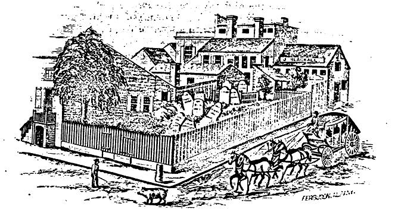

|
"Halenbeek Burial Ground"
 This image depicts the last days of the family plot on South Pearl and Hamilton Streets which was disbanded in June 1860. It had been created as a provision of the will of Hendrick Hallenbeck filed in 1764. It was perhaps the last of a number of family and church plots of old Albany that would be relocated to municipal plots and ultimately to Albany Rural Cemetery. The location has been described by Joel Munsell in a piece entitled:
This ancient landmark, which occupied the southwest corner of South Pearl and Hamilton streets, was removed in June, 1860, and attracted such crowds of people, curious to witness the process, that the police force was called in to disperse them, to enable the workmen to pursue their labor. The ground was set apart by Hendrik Halenbeek in the middle of the last century and formally dedicated to the purposes of a burial place for his family. It was near the north line of his farm, which extended from Plain street to the Beaver kil at Arch street, where it adjoined the farm of Gen. Schuyler, the south line at Pearl street being designated by a cannon, which remained in the ground until a few years ago, when it was removed by Joseph Fry, while excavating his lots near Arch street. The boundaries of this property east and west are claimed to have extended from the river to Eagle street; and that South Pearl street, was laid out by the said Hendrik through his property, and given by him for a street. Below Lydius street, South Peart street from the earliest time was undoubtedly the Bethleham road, being the margin of the river at high water; and as nearly all the pasture and water lots below Lydius street belonged to the Dutch church, if any portion of the farm ever reached the river proper. it must have been a strip running down between Hudson and Lydius streets. Its western boundary is uncertain, but it seems to have extended well towards Eagle [411] street. Through this farm a street was laid out at an early day, sixty feet wide, and called Halenbeek street. The descendants also lay claim to an island as once belonging to their domain, and the extent of the estate, by tradition, was 1,800 acres, in various places. This was long since reduced to the narrow limits of the burial place, and half of that had been taken for a street. So firmly were the heirs bound to preserve this spot for the purposes to which it was set apart, that for many years after it became desirable on all accounts to remove it, the wisest heads were puzzled how to effect their purpose. The will of Hendrik Halenbeek, hereto annexed, strictly enjoined upon those who came after him not to allow any one to be buried there who refused to contribute to its maintenance. The first innovation made upon it was by the opening of Hamilton street. Very few interments, however, had been made in it for many years previous to its removal. Among the most observable were those of Spencer Stafford who married Dorothy Halenbeck, and died in 1845; and William Austin, whose wife was Dorothy, daughter of Anthony (mentioned in the will below) who died in 1850. The male descendants were by this time so much dispersed that there were few remaining in the city that bore the name; but a number of female descendants who were married still resided here, of whom a few are now living. The property had, therefore, become a considerable burden upon a few individuals, who resolved to allow it to be sold for taxes. Application was made to the legislature for that purpose, and in 1849, a report was made favorable to its removal. (Sons-in-law) Lewis Benedict, John O. Cole, William Austin and Alexander Mc Hard, were appointed trustees. These had the property sold for taxes, and it was purchased for them for aperiod of one thousand years. They sold a portion and rented the west end to the Messrs. Bfackall, from the proceeds of which they were enabled to purchase thirty-seven lots in the Rural Cemetery, whither the remains of the dead were removed, and a monument erected at a cost of $1,500. The city authorities ordered the widening of Hamilton street, so as to take in nearly the whole ground, and the passer by would not suspect that it had ever been the site of a cemetery. During the cholera of 1832, some interments were made in this ground, when the authorities required that the trenches should be dug nine feet deep, so that no infection might arise. The original dimensions of the burial place seem to have been 60 feet square.
[413] I have been unable to locate the east and west lines of this bouwery; but there is a deed recorded in the county clerk's office, in book D, in which Hendrik Van Rensselaer in 1695, conveyed to Isaac Casperse all that lot of ground with a parcel of floodland lying near Albany, abutting to ye south on ye creek commonly called Beaver kil, to the west surrounded with the woods, to the north with ye hills and ye plain lying in the common, and to the east with the swamp, containing in breadth on ye southside 50 rods on ye north 36 rods, and in length 160 rods, for L 81 current money. These boundaries are so indefinite, they could not be very easily traced now, but such a plot of ground would inclose 24.25 acres. But there is a written agreement signed by a majority of the heirs, dated 27 Nov., 1766, the year in which Hendrik died, in which they agree to a division of a portion of the farm, which was mapped out into eight lots on each side of what is now South Pearl Street, between Hamilton and Lydius, "28 rods 5 feet Rynland measure," which is supposed to extend from Grand to Rose street. In 1788, another division was made into 8 parcels, of the ground included between Hamilton and Plain streets, and from Grand to Pearl, which map included the burial ground, showing that the farm extended north as far as Plain street. Near the corner of Plain street was a house built and occupied by Hendrik, and long after [414] wards the residence of Anthony and his family, which was taken down a few years ago, and the building of Merrifield and Wooster built upon it. A memorandum has been preserved, signed by Isaac Vrooman, dated July 13, 1767, whick appears to have been prepared with a view to disputing the title of Hendrik to the estate, who seems to have claimed it as heir-at-law, although the will of Isaac his father intended that the property he left should be equally divided among his children, and in his will devised his eldest son Jacob twenty shillings to bar his claim as heir-at-law; but Jacob dying before the will was proved, Hendrick being then the oldest son, undoubtedly contended that he was not barred by the will, or had other claims which are indicated in the following stray leaf found among the family papers.
The memorandum referred to puts a different construction upon the
matter, and throws a little light upon the family relations, as follows:
Reproduced from an engraving of a line drawing and printed in Munsell's Collections, volume 2, p. 410. The text presented above accompanies this image. Some spelling, punctuation, and paragraphing have been supplied.
posted: 11/5/07 |